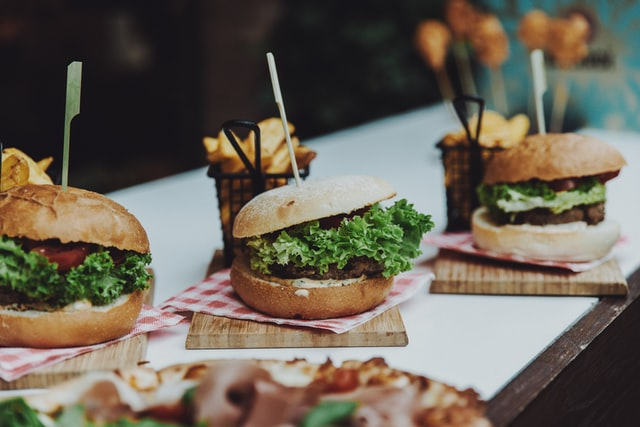

[How to Make Hambuger]
Home
브리오슈 번 레시피
햄버거 패티 레시피
햄버거 소스 레시피
Hamburger patty recipe
[재료]
소고기 600g
돼지고기 300g
소금 1T
후추 1T
달걀 2개
빵가루 55g
[방법]
갈아진 소고기와 돼지고기, 소금, 후추를 넣고 섞은 뒤 10분간 숙성한다.
달걀을 넣어 섞어준다.
110g씩 뭉쳐서 패티를 만든다.
